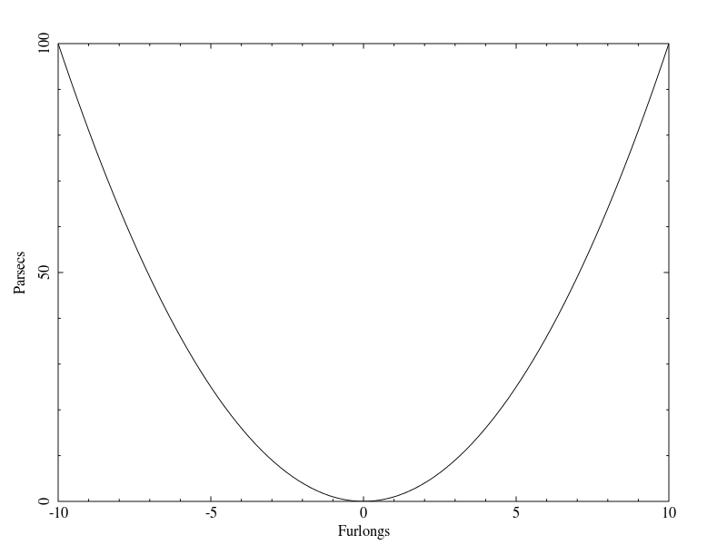

Getting started
This tutorial will show you the basics of using giza to create scientific plots with a simple example. We will generate the following graph;
|  |
{kind=link}
Click here to get the source file, or read on for a detailed description of the file.
Include the header
First things first include the giza header:
Opening a device
Next, before attempting any drawing you must open a giza device:
The first argument to this function specifies which device to open. "?" tells giza to prompt the user for a device. Other available devices should be specified by "/png", "/pdf", "/xw" or "/null". The second argument specifies a name for the open device. This name will be the name given to the xwindow or file that will be drawn to. The function returns 0 if no error has occurred.
Prepare the environment
To get the device ready for drawing you should make a call to giza_set_environment:
The first two arguments sets the range of the x-axis that will be displayed on the plot. The next two arguments
set the range of the y-axis that will be displayed. The second last arguments will determine if the
axes will be sized to give them equal scale. If set to 0 both axes will be made as large as possible, if
set to 1 the axes will have equal scales. The last argument specifies the way in which the box around the
plot area is drawn. Some of the options are -2 for no axis or box, -1 for only the box, 0 for a labeled box or 1
for a box and axis with labels.
Now your ready to do your drawing.
Drawing a line
We will start by drawing a line:
int i, n = 100;
double xpts[n], ypts[n];
for (i = 0; i < n; ++i)
{
xpts[i] = -10. + (double) i * 20. / (double) (n - 1);
ytps[i] = xpts[i] * xpts[i];
}
giza_line (n, xpts, ypts);
The line is a series of points that are joined by straight segments. So first of all we set up an array of the x coordinates for these points and a matching array of y coordinates. Then we call giza_line which takes as arguments the number of points to be joined, then an array on the x coordinates followed by an array of y coordinates.
Labeling the axes
Next we will label the axes.
giza_annotate ("B", 2.5, 0.5, 0.5, "Furlongs");
giza_annotate ("L", 2.5, 0.5, 0.5, "Parsecs");
The first argument for annotate specifies which side of the box the text is positioned relative to. Some of the options are "B" for bottom, "L" for left, "T" for top and "R" for right. The next argument specifies how far outside of the box the text is drawn. It is specified in units of character height. The third argument specifies the position of the text along the specified edge of the box, as a fraction of the edge. The fourth argument specifies the justification of the text, 0.0 for left justified, 0.5 for centre justified and 1 for right justified etc. The final argument specifies the string of text to be drawn.
Closing the device
Now last of all we close the gize device:
Compiling the code
Open a terminal and change into the directory containing the gettingstarted.c file, then run the following commands to compile then run your code:
gcc -o gettingstarted gettingstarted.c -lgiza
./gettingstarted
If you installed giza to a non-standard directory you may need to also give gcc the path to this location. for example:
gcc -o -gettingstarted gettingstarted.c -L/path/to/giza/installation -lgiza